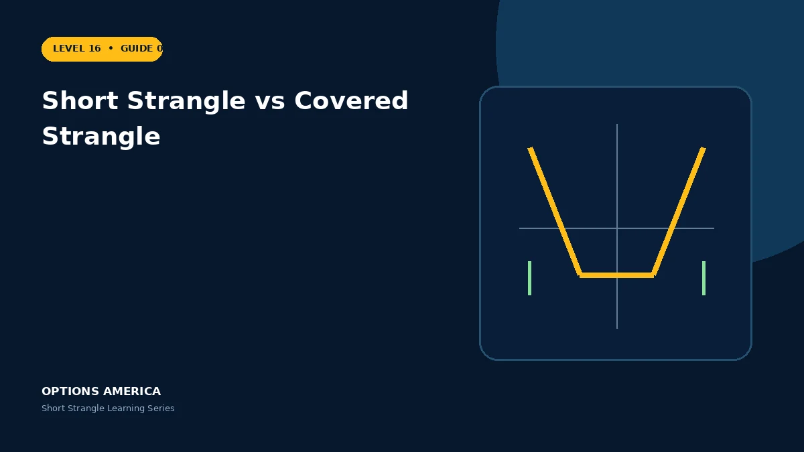

Compare an uncovered short strangle with a covered strangle that combines shares, a short call and a short put.
Position components
A short strangle contains only a short OTM call and put. A covered strangle adds 100 long shares per short call while retaining the short put.
Directional bias
The uncovered strangle can start near delta-neutral. The covered version begins bullish because of the long shares and may acquire more shares if the put is assigned.
Risk
Shares cover call delivery and cap stock upside at the call strike, but downside combines loss on the shares with the short-put obligation. Capital usage is usually much larger.
Income framing
Premium is not independent income. Evaluate the full stock-and-options payoff, dividend dates, assignment and concentration before comparing yields.
A practical example
Own 100 shares at $100, sell a 110 call and 90 put. Above $110 the shares may be called away; below $90 assignment can increase the holding to 200 shares.
This simplified scenario focuses on selected outcomes; live prices and risks will differ. Live option prices also reflect the underlying price, time decay, rates, dividends, liquidity and transaction costs. Greeks are theoretical estimates, not guarantees.
Build a risk-first trading plan
Before using short strangle vs covered strangle, record the stock price, put and call strikes, expiration, total credit and contract multiplier. Calculate both breakevens, then estimate dollar loss beyond them under upside and downside gaps. A wide strike range improves the starting room but does not define either tail.
Stress several prices, time points and volatility levels, including a skew change that affects the put and call differently. Review delta, gamma, theta, vega and buying power for the complete portfolio. Multiple OTM positions can become tested together during a common market shock.
Define a profit target, maximum tolerated loss, tested-side trigger, margin reserve and latest exit date before entry. Decide whether an event is intentionally included and how assignment would be handled. Use multi-leg orders and confirm quantities after every fill, roll or partial close.
Document the result after exit, including slippage, assignment effects and the largest intraday exposure. Comparing the original forecast with the actual path helps distinguish a sound process from a lucky outcome and improves later strike, duration, margin-reserve and position-size choices under similar market conditions.
Frequently asked questions
Is the call covered?
Yes, by the shares.
Can shares double after assignment?
Yes, one short put can add 100 shares.
Is downside defined?
It is substantial, not eliminated.
Continue the Short Strangle cluster
Explore related guides: Best Market Conditions for a Short Strangle · Short Strangle Expiration and DTE Selection · Short Strangle Options Strategy Explained. For a structured sequence, use the free Level 16 – Short Strangle course.
Options involve risk and are not suitable for every investor. This material is educational and is not investment, tax or legal advice. Greeks are theoretical estimates, and contract terms and broker requirements can vary.